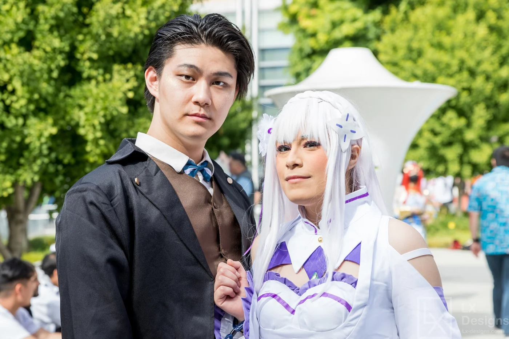
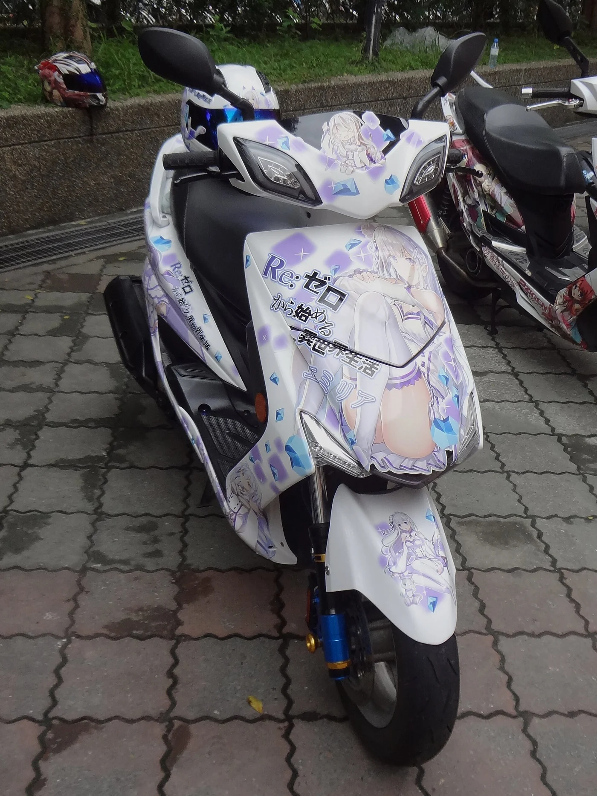
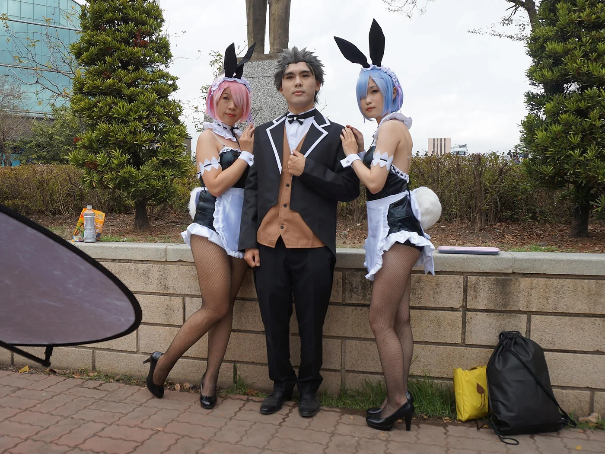
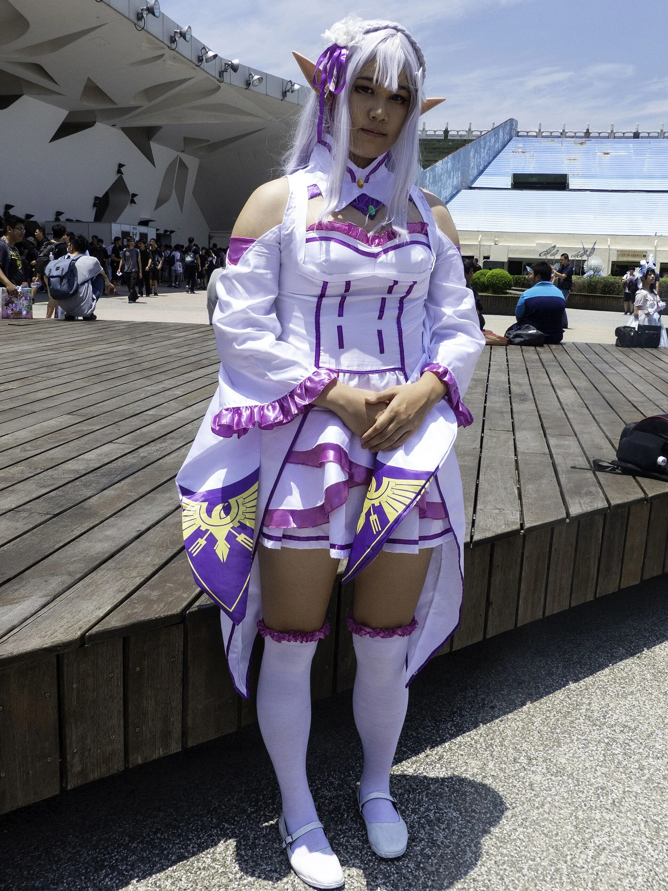
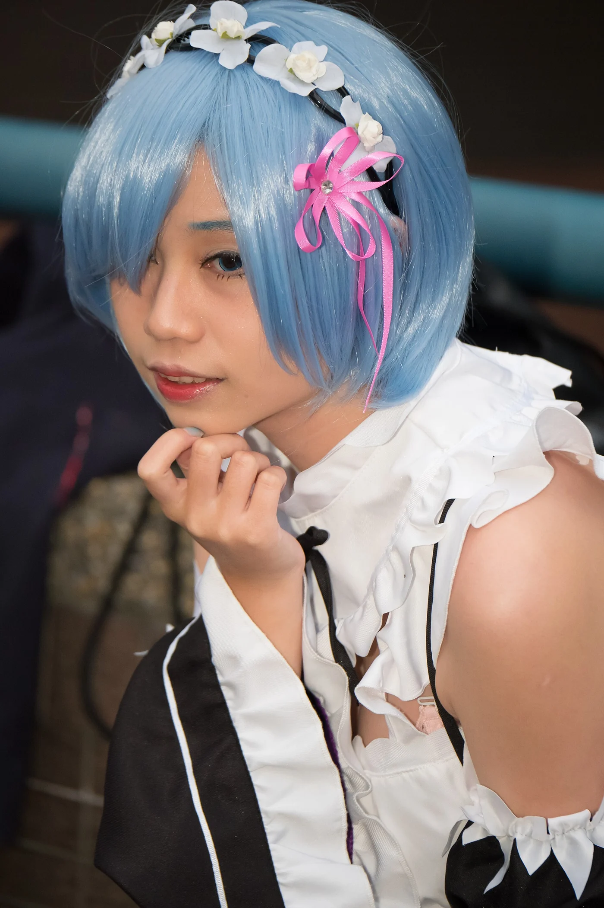
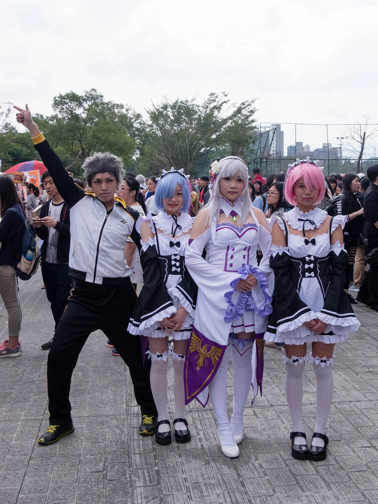
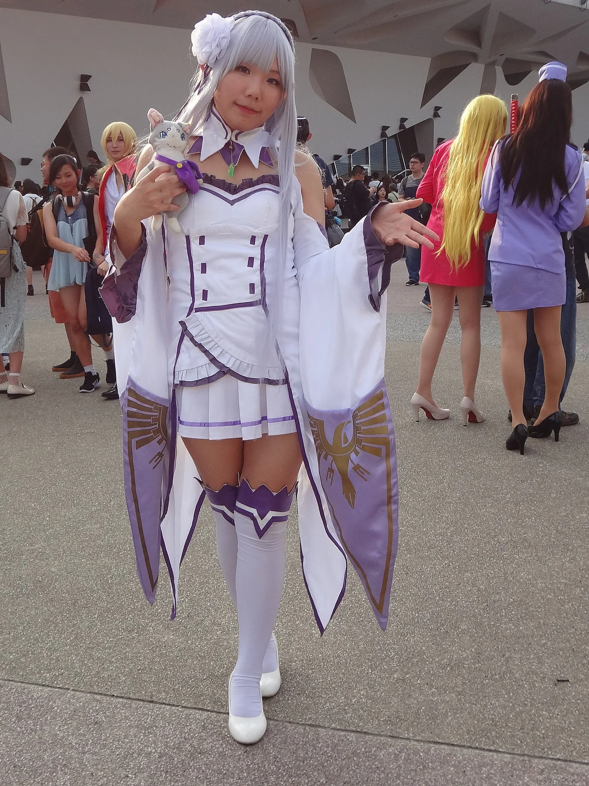
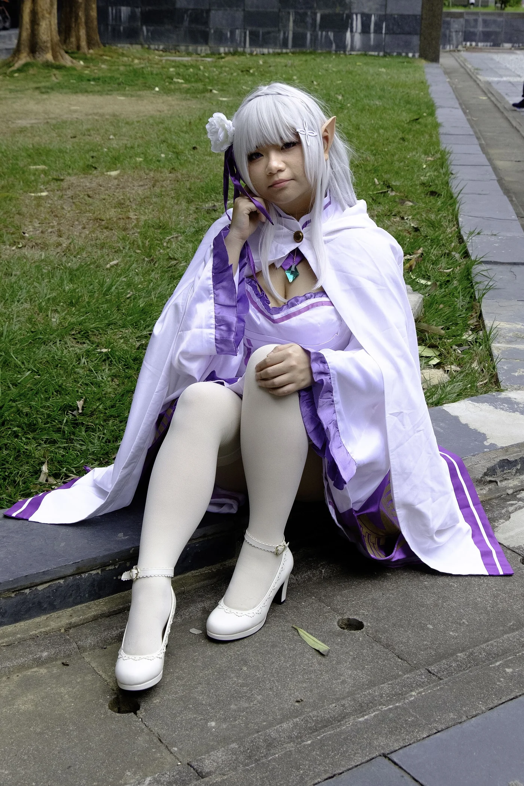

Re:Zero Season 4: The Complete Guide to the Loss and Recapture Arcs

Re:Zero Season 4 is the best-reviewed season the series has ever had, and it is also the strangest. Nineteen episodes, two arcs, one desert, one tower — and a lead character who spends eleven straight episodes not knowing who he is.
It aired from 8 April to 30 September 2026, animated by White Fox, and it adapts Arc 6 of Tappei Nagatsuki's light novels (volumes 21 to 25). On AniList it currently sits at 90 out of 100 with more than 154,000 members — the highest score of any anime in the Fall 2026 season, above Black Clover Season 2 and The Apothecary Diaries Season 3.
If you have not seen the first three seasons, start with our full guide to Re:Zero Seasons 1-3 instead. Everything below assumes you know what Return by Death is.
The basics
- Episodes: 19, split into the Loss Arc (11) and the Recapture Arc (8)
- Aired: 8 April - 17 June 2026, then 12 August - 30 September 2026
- Studio: White Fox
- Director: Masahiro Shinohara (returning from Season 3)
- Series composition: Masahiro Yokotani
- Character design: Haruka Sagawa
- Music: Kenichiro Suehiro
- Ending theme: "Ender Ember" by MYTH & ROID x TK (Ling tosite sigure)
- Source: Arc 6, volumes 21-25
The staff continuity matters. Shinohara, Yokotani, Sagawa and Suehiro all carried over from Season 3, and Nagatsuki himself stayed on as script supervisor. That is why Season 4 does not feel like a different show the way some long-running series do after a break.
Where it starts: the worst possible aftermath
Season 3 ended with Priestella saved and everything else ruined.
Julius Juukulius's name was eaten by Gluttony. To the entire world — his family, his colleagues, the woman he serves — he never existed. Only Subaru remembers him. Anastasia Hoshin's body is now shared with Foxidna, a copy of the Witch of Greed, who is cooperating for reasons of her own and trusts nobody. And Rem is still asleep, still forgotten by almost everyone, still the open wound the series refuses to close.
That is the party that walks out of Priestella: Subaru, Emilia, Beatrice, Julius, Ram, Foxidna and a handful of others, crossing the Auguria Dunes — a desert full of magic beasts — toward the Pleiades Watchtower, where a legendary sage is supposed to be.


The Loss Arc (episodes 1-11): who is Subaru Natsuki?
The first arc is built on a single, brutal premise: Subaru loses his memory.
He wakes up not knowing Emilia, not knowing Beatrice, not knowing that Rem exists. Everyone around him is a stranger who treats him with a familiarity he cannot account for. And crucially — he does not remember Return by Death's rules, or the loops, or the deaths.
What follows is one of the most uncomfortable stretches of television the series has produced, because an amnesiac Subaru is a happier Subaru. He is excited about being in another world again. He is cheerful. And everyone watching him knows exactly what that cheerfulness is costing the people around him, who have to watch a man they love not recognise them.
Julius and Ram carry the emotional weight. Julius has already lost his name; now he has to reintroduce himself to the one person who remembered him. Ram has to face a Subaru who does not know who Rem is — the sister she has been fighting to wake up for years.
Meili is the first thread. Someone pushes Subaru down a staircase, killing him. He respawns believing it was a prophetic dream, repeats the loop, and cannot find his attacker. The answer turns out to be Meili — the child assassin from Season 2 — who was acting on instructions from the real Subaru, who had told her to "follow her desires." When the truth comes out, Meili breaks, because killing is the only way of living Elsa ever taught her. Subaru and Emilia stop her from jumping.
Reid Astrea is the wall. The tower's guardian, and the original Sword Saint, is not interested in fair fights. He duels Julius, refuses to use his full strength because he is currently occupying the body of Roy Alphard — the third Gluttony — and kills Subaru more than once.
Shaula is the mystery. The tower's keeper, who calls Subaru "Master Flugel" and is clearly not telling him everything. She is also the scorpion mabeast that keeps appearing to kill rulebreakers, which means every time the party fights it, they are fighting her.
Satella keeps arriving. Whenever Subaru's connection to Return by Death is exposed, the Witch of Envy manifests and starts destroying the tower. She is not a villain and she is not an ally, and Season 4 refuses to resolve her.
And then Emilia says it. In episode 11, with Subaru having given up, having concluded that everyone around him secretly resents him, having decided he wants to die — Emilia tells him everything they went through together. He does not believe he is capable of any of it. So she confesses that she loves him. And the amnesiac Subaru realises what has actually changed since he arrived in this world: he fell in love with her. Then the miasma devours them both, and he respawns, and vows to save everyone this time.
The Recapture Arc (episodes 12-19): getting himself back
The second arc is the payoff, and it is structured like a heist where the thing being stolen back is a person.
Episode 12 — Subaru immediately tells everyone he has amnesia, catches Meili before she can push him, and talks her down. Then he proposes something counter-intuitive: do not try to recover his memories yet. Keep pushing through the tower, because the tower is probably the cause.
Episode 13 — Reading Reid's Book of the Dead sends Subaru to Od Lagna, the "world's cradle" where souls are filtered after death. There he meets Louis Arneb, the Sin Archbishop of Gluttony — and she taunts him about his deaths, then admits she ate his memories. This is the reveal the whole arc hangs on: the amnesia is not an accident and not a curse. It is an attack.
Then Rem appears. Not the real Rem — a materialisation of the memories Rem herself discarded — and she tells him to stand up. It is the single most important scene in the season, and it happens to a man who does not remember who she is.


Episode 14 — The tower is attacked on five fronts at once: Ley Batenkaitos, Reid, a scorpion mabeast, the tower's rules, and Satella. Subaru dies when the miasma swallows everything. On respawn, his chest pains turn out to be the Authority of Greed awakening — Cor Leonis, a sixth sense that tracks his allies and lets him take on their burdens.
Episode 15 — Shaula explains the scorpion is a form she is contracted to take to kill rulebreakers. Subaru works out she has been hiding a rule because she is afraid of being alone again. Over the next fifteen loops he tries and fails to save everyone, until he finds his own Book of the Dead.
Episode 16 — "Subaru Natsuki." This is the episode the season exists for. Subaru reads the books recording the real Subaru's deaths, looking for what made him special, and finds nothing. Then he is pulled back to Od Lagna and meets the real Subaru — and demands to know how he kept saving everyone. The answer is that he loves them. The amnesiac Subaru realises they are not different people at all, calls his counterpart amazing, and recombines with him.
And then the actual villain appears. Louis Arneb had a clone possess Subaru so she could experience Return by Death herself. The clone, having lived through those deaths, is traumatised and expels him. When the real Louis arrives to recombine with her clone, the clone resists out of fear — and the two cannibalise each other.
Episode 17 — Julius finally beats Reid, not by getting stronger but by accepting that he has to move forward instead of clinging to the identity he lost. Foxidna convinces Anastasia to return to her own body, which means Anastasia forgets Julius — and the two of them get to start over. Emilia reaches the top of the tower for the final exam and finds the overseer is Volcanica, the Divine Dragon of Lugunica.
Episode 18 — "Ram." The best fight of the season. Ram, who has no horn and therefore no mana of her own, fights Ley Batenkaitos with Subaru feeding her strength through Cor Leonis. Ley responds by wearing the faces and abilities of everyone he has eaten, including Rem. When Subaru is forced to redirect his power to an injured Meili, Ram seems finished — and then channels her oni power through her sleeping twin, because the two of them still share a connection. She kills the Sin Archbishop of Gluttony mid-sentence, while he is confessing that he has developed a crush on her.
Episode 19 — "Shaula" / "Hero." Emilia works out that the final exam is simply touching the monolith Volcanica is guarding, and clears the tower. With the rules gone, Shaula goes berserk and has to be put down — and she is satisfied with that, still mistaking Subaru for Flugel, leaving behind only a tiny scorpion holding her soul. Ley's death returns Emilia's name. Julius seals the unconscious Roy. And then Subaru is transported to an open plain, where Rem wakes up — and asks who he is. She has amnesia. He introduces himself, and declares himself her hero.



What Season 4 is actually about
Strip away the mabeasts and the loops and Season 4 is asking one question: if you lost every memory of who you are, would you still be you?
It answers it three times. Subaru loses his memories and discovers that his courage was never a personality trait — it was a decision he kept making, and the amnesiac version makes it too. Julius loses his name and has to decide whether to rebuild the man he was or become someone new. Rem wakes up with nothing and gets to start over entirely.
There is a darker thread too. Louis Arneb's whole plan is to experience someone else's suffering second-hand, and the show is unflinching about what that does to her: she cannot survive it. Season 4 is, among other things, a very pointed argument about what it costs to treat another person's pain as content.
Verdict
Season 4 is the most confident Re:Zero has ever been. The amnesia premise could easily have been a cheap reset — a way to re-explain the world to new viewers — and instead it is used to interrogate the character from the inside. The Loss Arc is deliberately frustrating, and that frustration is the point; the Recapture Arc pays it off in almost every thread.
The animation is White Fox at their best in the fights and their most restrained in the quiet scenes, which is the correct choice for a season this talky. Kenichiro Suehiro's score does a lot of work holding the two halves together.
If you have followed the series since 2016, this is the season that rewards the patience. If you are arriving late, watch the first three seasons first — you cannot shortcut Arc 6.
Score: 9/10.
New to the series? Read Re:Zero Seasons 1-3: The Complete Story So Far first.
Frequently asked
How many episodes is Re:Zero Season 4? 19 — 11 in the Loss Arc and 8 in the Recapture Arc.
Is Season 4 finished? Yes. It ran from 8 April to 30 September 2026.
Which novels does it adapt? Arc 6, volumes 21 to 25.
Why does Subaru lose his memory? Louis Arneb, the Sin Archbishop of Gluttony, had a clone possess him so she could experience Return by Death herself. The possession is what erases his memories.
Does Subaru get his memories back? Yes, in episode 16, when he meets the "real" Subaru in Od Lagna and recombines with him.
Does Rem wake up? Yes — in the final episode, with no memory of Subaru.
Is there a Season 5? Nothing has been announced as of October 2026. The light novels continue well past Arc 6.